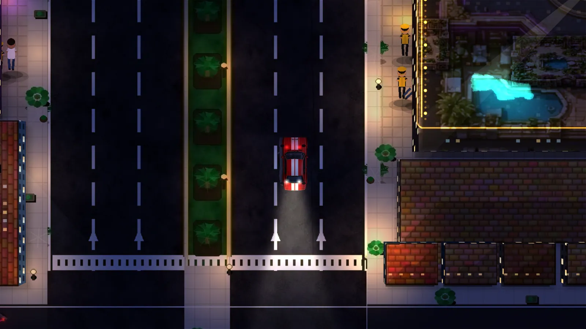

Huge open city
Ten districts and a painted core you can drive end to end: the Strip, Downtown, the Harbour, Port Royale, Midtown, Eastside, Ironside, Old Town, Sunset Hills and the Airfield.
MetaWinners · fan-made open-world heist
The house always wins. Until it doesn't.
Steal the car. Own the night. Crack the Crown Palace. Chaos is back in town with six jobs, a whole city to burn rubber through, and every cop on the Strip on his tail.
Free · No download · No account · Works on your phone in landscape
Crown City is a painted casino metropolis, built for top-down mayhem. Cruise the neon Strip, cut through Downtown alleys, race along the Harbour docks, or blast out past Port Royale, Midtown, Eastside, Ironside, Old Town, Sunset Hills and the Crown Airfield.
The painted city core opens onto procedural outer districts: weathered asphalt, glowing casino roofs, lawns and pools in the hills, cranes and containers at the port. Traffic runs on real signals, pedestrians fill the sidewalks, and the whole place changes as the sun goes down.
Vera Vale, Crown City News: "Sources tell me CHAOS is back in town. The house would like a word."

Big-city crime-caper energy, tuned for a browser tab and a phone screen.
Ten districts and a painted core you can drive end to end: the Strip, Downtown, the Harbour, Port Royale, Midtown, Eastside, Ironside, Old Town, Sunset Hills and the Airfield.
A full 24-hour cycle. Golden-hour shadows, then headlights, street lamps, neon signs, traffic signals and police light bars painting the night.
Muscle cars, sports cars, cabs, vans, two motorbikes, two speedboats and the Nyx Sixteen HYPERCAR with boost. Drift on the handbrake, carve the bay, leave skid marks everywhere.
Up to five stars. Patrols flood in, sirens wail and pan past you, and the chase only ends when you break line of sight long enough to lose them.
An original score that builds with the heat: calm cruising, mission tension, full chase mode at three stars. Hop in a car and flip between VEIL FM, CHIP RADIO and NIGHT SHIFT.
Six connected jobs with Chaos and Vera Vale: intercept the van, beat Fire through every race gate, fund Neural, case the Palace on foot, choose a quiet or loud heist, then escape by boat and the unlocked Nyx. Objective checkpoints let you retry a job step.
Touch stick, big context buttons, one-tap fullscreen in landscape, adaptive resolution and quality tiers so it stays smooth on mid-range phones.
No wallet, no wagering, no sign-up. Chips are just the score. It is a game, not a casino.
Real in-game captures from the current build.
Grab a car, pick a station, and go take what the house owes you.
Fan-made tribute. Not affiliated with, endorsed by, or connected to MetaWin, MetaWinners, or any game studio. MetaWinners character likenesses are used as fan reference only. Play chips only: there is no real-money wagering, no wallet, and nothing to buy. All city, character and brand names inside the game are fictional.